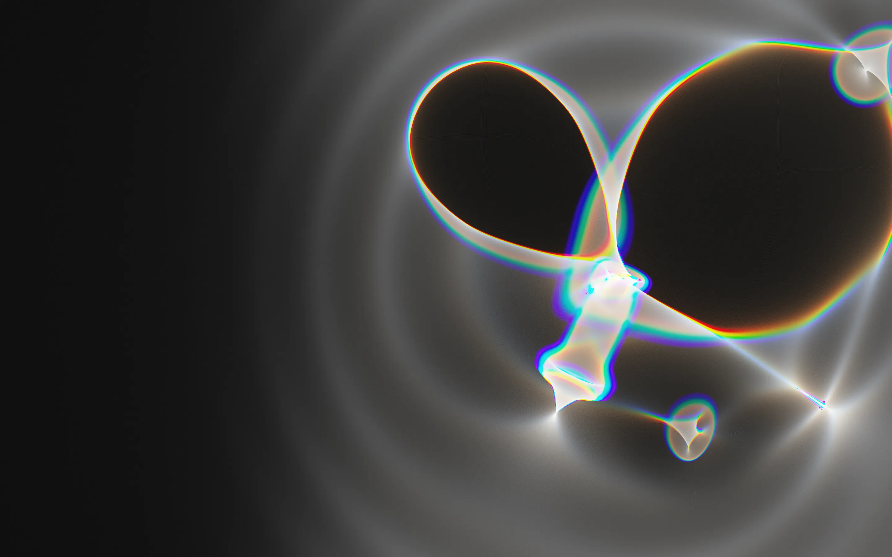
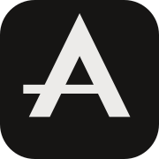
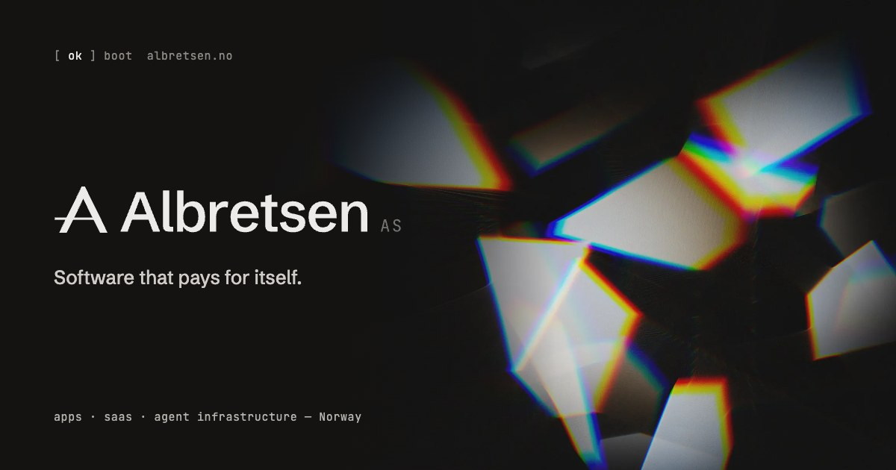
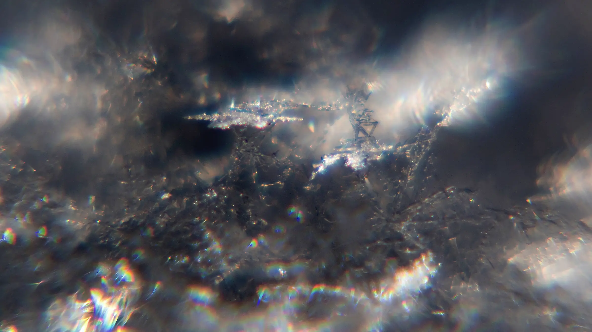
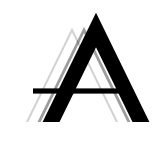

Light, folded.
Rendered with a spectral caustic tracer written for this kit: millions of rays pass a glass height-field, each wavelength bending slightly differently. Focused light splits into fringes; everything else stays grey. Each still ships as AVIF + WebP at 1x and 2x, plus a portrait crop. Hover the photograph: the lens shows the original colour and its source.


 iss066e118171 · 17 Jan 2022
ISS, 262 mi above the Atlantic · NASA, public domain
iss066e118171 · 17 Jan 2022
ISS, 262 mi above the Atlantic · NASA, public domainAn A made of light.
The mark is an A drawn as two legs of a prism, seen edge-on. Its crossbar is a beam that enters from outside the left leg and stops at the right one. The wordmark is Schibsted Grotesk 560 (a typeface made for the Norwegian publisher Schibsted), outlined. "AS" is set small in JetBrains Mono.


Grey, until it refracts.
Nine warm greys tinted a hair toward the seed hue (36° OKLCH, chroma 0.002–0.006). The interface never carries colour. Colour appears only inside imagery: in caustic fringes, in the amber of city lights, in a product's own icon. The fringe tokens exist for light effects only (edges, lens rims), never for fills or text.
Two voices.
Schibsted Grotesk (variable, 400–900, OFL) for everything a person reads. JetBrains Mono (400, OFL) for everything the machine says: boot lines, captions, figures in tables. Both are vendored as latin subsets in fonts/ (78 KB together).
Each icon, cast in glass.
Every live product's real icon (unaltered, from designs/_shared/products) is imagined as a slab of glass on a grey surface. Its caustic carries its own silhouette and glyph, and the only colour in the frame is the icon's own. The cards lie in a spring-physics stack: drag and throw the top card, click to flip it for the facts, arrow keys to cycle.
Afterimages.
Retired products without surviving brand assets get a specimen plate: one quiet glyph with its echoes, the name, and the year it began. Luma keeps its real logo on the one pale plate. Plates are SVG, 400×400, and read well from 120px up.
Frost, grain, wall light.
Macro photographs of snow crystals in hard sun (Wikimedia Commons, CC0) are natural prisms: grey, with tiny spectral sparks. A seamless caustic tile gives sections the feel of light on a wall. Grain sits over everything at 50% overlay.


W.carter · Wikimedia Commons · CC0

identity/mark-echo.svgTouch the glass.
prism-field.js: lays a sheet of live glass over any still, in one fragment shader. Move to drag a lens through it; click to send an echo ring. Seven wavelengths refract separately, so every bend fringes. The preview hero uses it after the boot film. stone.js: a real CC0 scanned stone (Poly Haven) in a grey studio; drag to turn it, hover to raise a dispersed rim light. Both pause off-screen and respect reduced motion.
Five signatures.
motion.css + motion.js. Smooth scroll is Lenis 1.3.23 (on for this page). Scroll-driven parts are pure CSS with an @supports guard.
Boot lines tick in on a 110 ms cadence with a 1px progress hairline. Then the log lifts away trailing two afterimages and the page resolves out of blur.
A spring-eased radial mask follows the cursor and opens a hidden layer: original colour, a slight zoom and mono annotations. Try the NASA photograph or the frost.
--x --y --r · stiffness 170, damping 20
Drag, throw, flip, stack. Springs: stiffness 260, damping 24; flips run at 70% stiffness so the turn reads. The edge catches a fringe mid-flip.
go to the deckEverything in the kit.
Full art direction, references and licences in ASSETS.md. Folder total stays under 6 MB.
| file | what | source / licence |
|---|